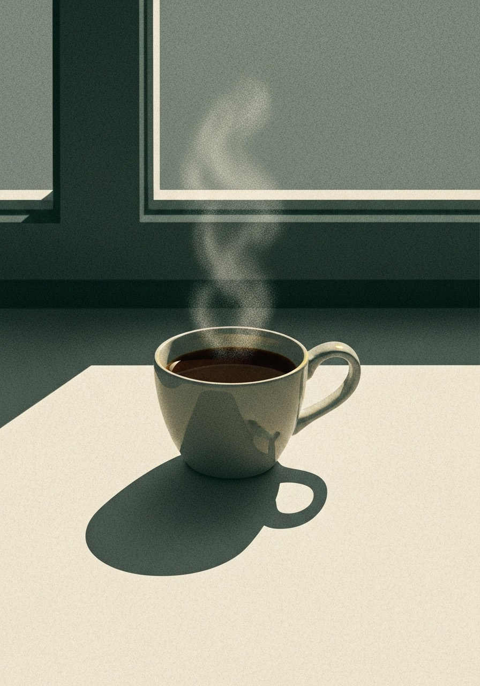

Slow roasted
Small batches, roasted to order, never sitting on a shelf until the character fades.
Single origin, slow roasted, and shipped the week it is ready. No haste in the cup.

The still hour
The aster opens late, when the day has gone quiet and the light turns long. We roast for that hour. The one before the noise, or the one you keep after it.
Every lot is a single farm, roasted to order, and out the door within two days. Nothing sits. Nothing waits on a shelf until the brightness has left it.
Small batches, roasted to order, never sitting on a shelf until the character fades.
One farm, one lot, traceable to the row it grew in and the hands that picked it.
Out the door within forty eight hours of roast, at the very peak of the bean.
From the field guide